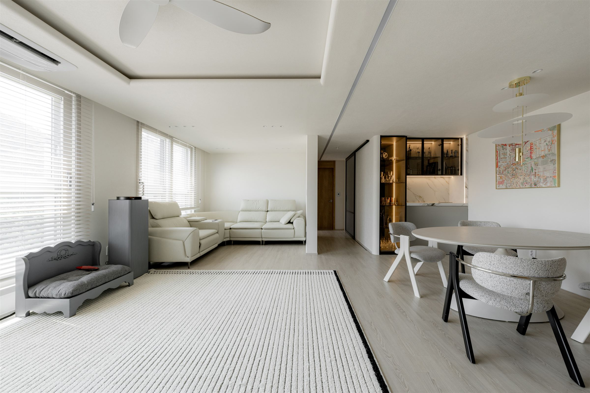

남양휴튼
주거 인테리어 · 거실, 다이닝, 주방

DESIGN SEELINE · INTERIOR DESIGN
당신의 생활을 읽고, 공간의 가능성을 설계합니다.
인테리어 설계부터 시공, 마지막 가구의 자리까지.
01 / OUR SPACES
거실에서 주방으로, 머무는 자리에서 움직이는 동선으로.
디자인시선이 만든 공간을 살펴보세요.
다섯 가지 공간 사진에서 마음이 가는 분위기 하나만 골라보세요.
 STRUCTURE / FLOW / MATERIAL
STRUCTURE / FLOW / MATERIAL02 / OUR POINT OF VIEW
매일 지나는 동선이 왜 불편한지, 같은 면적이 왜 답답하게 느껴지는지. 디자인시선은 생활을 관찰하는 것에서 설계를 시작합니다.
벽과 수납의 위치, 빛이 들어오는 방향, 소재가 이어지는 방식. 각각의 선택을 하나의 공간으로 연결해 기능과 심미성을 함께 높입니다.
우리 집의 고민 이야기하기 ↗03 / HOW WE WORK
인테리어 설계 · 시공 · 공간 완성
생활과 취향을 하나의 방향으로 정리합니다.
원하는 분위기와 지금의 불편함을 듣고, 공간을 쓰는 방식부터 살핍니다.
구조와 동선, 수납과 조명, 마감재의 관계를 도면과 디자인으로 구체화합니다.
현장 조건에 맞춰 설계를 조율하고, 마감의 선과 비례가 이어지도록 구현합니다.
실제 생활의 동선과 가구의 자리까지 함께 살피며 공간을 마무리합니다.
04 / THE FINISHING TOUCH
좋은 공간에는 가구가 놓일 자리도 함께 설계되어 있습니다. 바닥의 소재와 소파의 색, 식탁의 크기와 조명의 높이까지.
디자인시선은 처음부터 가구를 공간의 일부로 계획합니다. 가구매칭에서 취향을 찾아보면, 상담에서 우리 집에 맞는 조합으로 다듬어갑니다.
가구매칭 시작하기 ↗ 공간 · 가구 · 조명, 하나의 장면으로
공간 · 가구 · 조명, 하나의 장면으로TRY YOUR SPACE
치수가 등록된 제품은 간략 모델로 배치를 살펴볼 수 있습니다. 공간에 맞는 최종 구성은 상담에서 함께 검토합니다.
LET’S TALK ABOUT YOUR SPACE
마음에 남은 시공사례, 담아둔 가구, 아직 정리되지 않은 생각도 좋습니다.
지금의 공간과 원하는 변화부터 들려주세요.
가구를 담지 않아도 인테리어 상담을 시작할 수 있습니다.